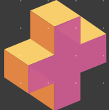

<div class="bg-gray-900 min-h-screen grid grid-cols-4 gap-3">
  <aside class="w-70" aria-label="Sidebar">
    <div class="overflow-y-auto py-4 px-3 bg-gray-500 rounded dark:bg-gray-800 min-h-screen">
      
      <ul class="space-y-2 divide-y-[3px] divide-purple-400">

          <li class="pt-14">
            <a class="flex items-center p-2 text-base font-normal rounded-lg dark:text-white hover:bg-gray-100 dark:hover:bg-gray-700"
            routerLink="/home-page/mur" routerLinkActive="active">
              <svg class="flex-shrink-0 w-6 h-6 text-gray-500 transition duration-75 dark:text-gray-400 group-hover:text-gray-900 dark:group-hover:text-white" xmlns="http://www.w3.org/2000/svg" fill="none" viewBox="0 0 24 24" stroke-width="1.5" stroke="currentColor" class="w-6 h-6">
                <path stroke-linecap="round" stroke-linejoin="round" d="M2.25 12l8.954-8.955c.44-.439 1.152-.439 1.591 0L21.75 12M4.5 9.75v10.125c0 .621.504 1.125 1.125 1.125H9.75v-4.875c0-.621.504-1.125 1.125-1.125h2.25c.621 0 1.125.504 1.125 1.125V21h4.125c.621 0 1.125-.504 1.125-1.125V9.75M8.25 21h8.25" />
              </svg>
              <span class="ml-3">Mur</span>
            </a>
          </li>
          <li class="pt-14">
            <a  class="flex items-center p-2 text-base font-normal text-gray-900 rounded-lg dark:text-white hover:bg-gray-100 dark:hover:bg-gray-700"
            routerLink="/home-page/notifications" routerLinkActive="active">
              <svg class="flex-shrink-0 w-6 h-6 text-gray-500 transition duration-75 dark:text-gray-400 group-hover:text-gray-900 dark:group-hover:text-white" xmlns="http://www.w3.org/2000/svg" fill="none" viewBox="0 0 24 24" stroke-width="1.5" stroke="currentColor" class="w-6 h-6">
                <path stroke-linecap="round" stroke-linejoin="round" d="M14.857 17.082a23.848 23.848 0 005.454-1.31A8.967 8.967 0 0118 9.75v-.7V9A6 6 0 006 9v.75a8.967 8.967 0 01-2.312 6.022c1.733.64 3.56 1.085 5.455 1.31m5.714 0a24.255 24.255 0 01-5.714 0m5.714 0a3 3 0 11-5.714 0M3.124 7.5A8.969 8.969 0 015.292 3m13.416 0a8.969 8.969 0 012.168 4.5" />
              </svg>
              <span class="flex-1 ml-3 whitespace-nowrap">Notifications</span>
            </a>
          </li>
          <li class="pt-14">
            <a href="#" class="flex items-center p-2 text-base font-normal text-gray-900 rounded-lg dark:text-white hover:bg-gray-100 dark:hover:bg-gray-700"
            routerLink="/home-page/conversations" routerLinkActive="active">
              <svg  class="flex-shrink-0 w-6 h-6 text-gray-500 transition duration-75 dark:text-gray-400 group-hover:text-gray-900 dark:group-hover:text-white" xmlns="http://www.w3.org/2000/svg" fill="none" viewBox="0 0 24 24" stroke-width="1.5" stroke="currentColor" class="w-6 h-6">
                <path stroke-linecap="round" stroke-linejoin="round" d="M20.25 8.511c.884.284 1.5 1.128 1.5 2.097v4.286c0 1.136-.847 2.1-1.98 2.193-.34.027-.68.052-1.02.072v3.091l-3-3c-1.354 0-2.694-.055-4.02-.163a2.115 2.115 0 01-.825-.242m9.345-8.334a2.126 2.126 0 00-.476-.095 48.64 48.64 0 00-8.048 0c-1.131.094-1.976 1.057-1.976 2.192v4.286c0 .837.46 1.58 1.155 1.951m9.345-8.334V6.637c0-1.621-1.152-3.026-2.76-3.235A48.455 48.455 0 0011.25 3c-2.115 0-4.198.137-6.24.402-1.608.209-2.76 1.614-2.76 3.235v6.226c0 1.621 1.152 3.026 2.76 3.235.577.075 1.157.14 1.74.194V21l4.155-4.155" />
              </svg>

                <span class="flex-1 ml-3 whitespace-nowrap">Conversations</span>
                <!-- pour notifications, utile -->
                <span class="inline-flex justify-center items-center p-3 ml-3 w-3 h-3 text-sm font-medium text-blue-600 bg-blue-200 rounded-full dark:bg-blue-900 dark:text-blue-200">3</span>
                <!-- class="flex-shrink-0 w-6 h-6 text-gray-500 transition duration-75 dark:text-gray-400 group-hover:text-gray-900 dark:group-hover:text-white" -->
            </a>
          </li>
          <li class="pt-14">
            <a href="#" class="flex items-center p-2 text-base font-normal text-gray-900 rounded-lg dark:text-white hover:bg-gray-100 dark:hover:bg-gray-700"
            routerLink="/home-page/profile-page" routerLinkActive="active">
              <svg xmlns="http://www.w3.org/2000/svg" fill="none" viewBox="0 0 24 24" stroke-width="1.5" stroke="currentColor" class="w-6 h-6">
                <path stroke-linecap="round" stroke-linejoin="round" d="M15.75 6a3.75 3.75 0 11-7.5 0 3.75 3.75 0 017.5 0zM4.501 20.118a7.5 7.5 0 0114.998 0A17.933 17.933 0 0112 21.75c-2.676 0-5.216-.584-7.499-1.632z" />
              </svg>
              <span class="flex-1 ml-3 whitespace-nowrap">Profile</span>
            </a>
          </li>
          <li class="pt-14">
            <a href="#" class="flex items-center p-2 text-base font-normal text-gray-900 rounded-lg dark:text-white hover:bg-gray-100 dark:hover:bg-gray-700"
            routerLink="/home-page/saved" routerLinkActive="active">
              <svg class="flex-shrink-0 w-6 h-6 text-gray-500 transition duration-75 dark:text-gray-400 group-hover:text-gray-900 dark:group-hover:text-white" xmlns="http://www.w3.org/2000/svg" fill="none" viewBox="0 0 24 24" stroke-width="1.5" stroke="currentColor" class="w-6 h-6">
                <path stroke-linecap="round" stroke-linejoin="round" d="M17.593 3.322c1.1.128 1.907 1.077 1.907 2.185V21L12 17.25 4.5 21V5.507c0-1.108.806-2.057 1.907-2.185a48.507 48.507 0 0111.186 0z" />
              </svg>
                <span class="flex-1 ml-3 whitespace-nowrap">Sauvegardes</span>
            </a>
          </li>
      </ul>
      <div class="pt-20">
        <p class="text-center text-yellow-50 text-lg italic">Time To Get Some Friends !</p>
      </div>
    </div>
  </aside>

  <div class="col-span-3">
   <router-outlet></router-outlet>
  </div>
  
</div>


